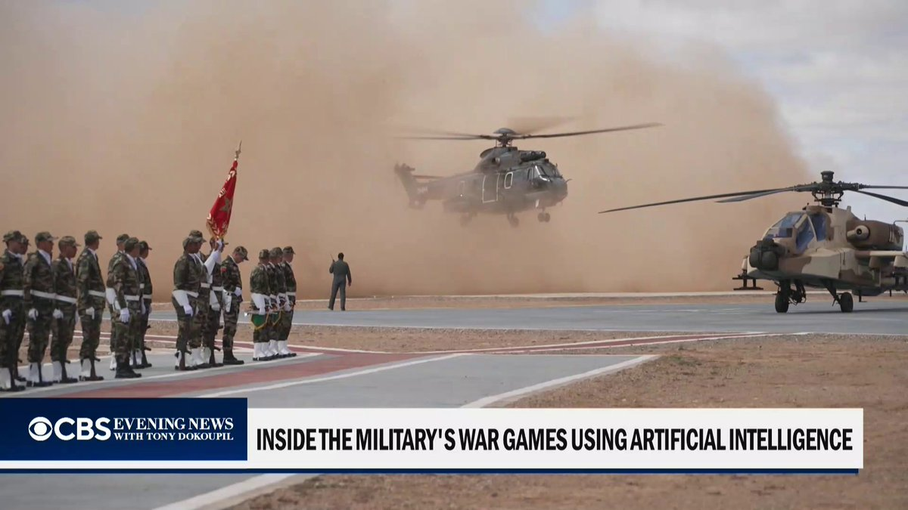
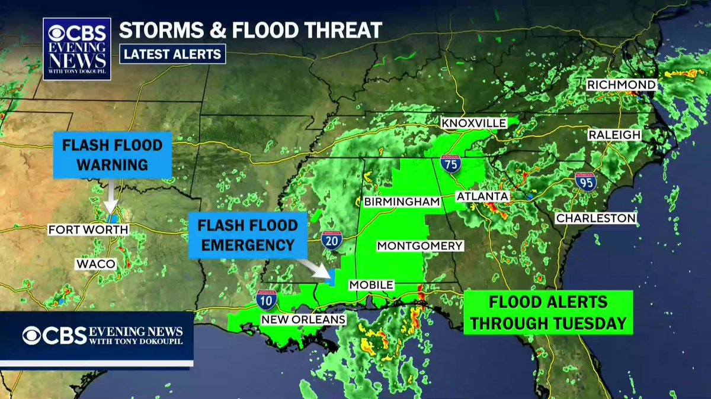
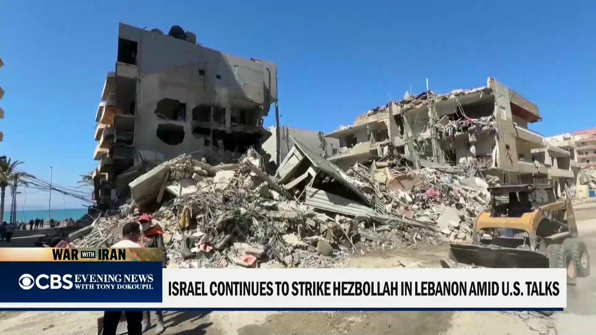
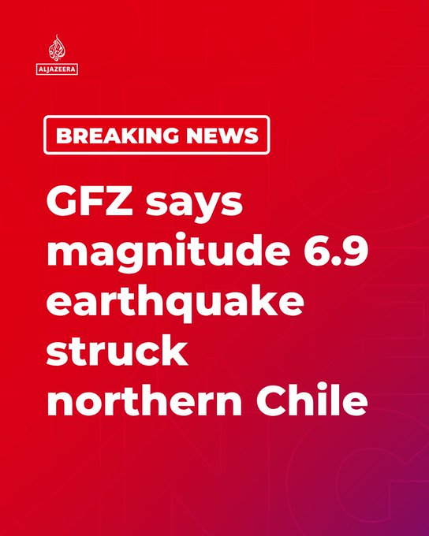
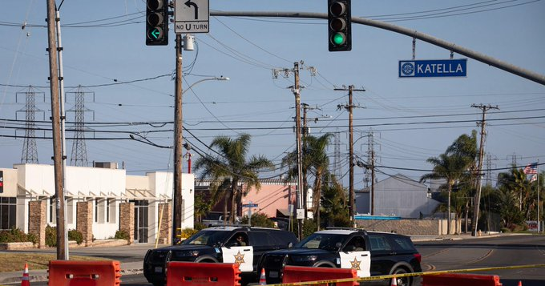
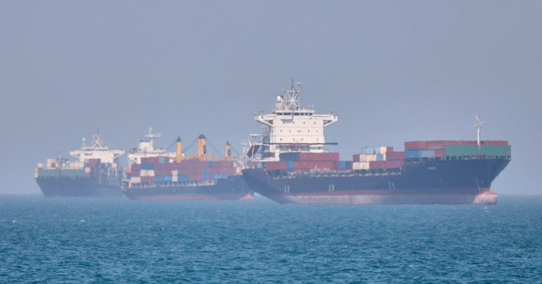
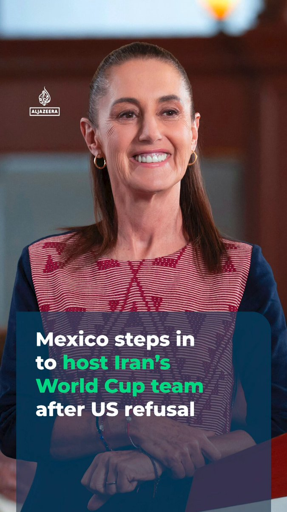
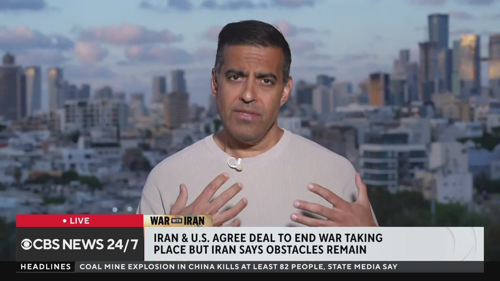
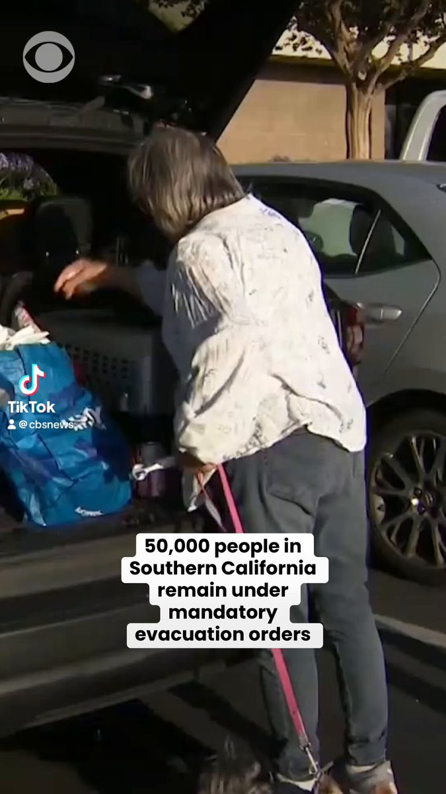
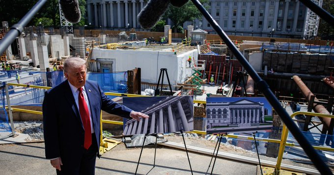

@CBSNews
📝 原文: NEW: The U.S. launched "self-defense strikes" in southern Iran, CENTCOM says.
🇨🇳 译文: 新消息：中央司令部称，美国在伊朗南部发动了“自卫袭击”。

🕒 2026-05-25T23:58:59+00:00
| 来源 | 旧窗口内数量 | 本次新增 | 本次淘汰 | 当前窗口内共有 |
|---|---|---|---|---|
| 推文 + Dawn 新闻 | 0 | 48 | 0 | 48 |
| ARY News | 0 | 0 | 0 | 0 |
注：淘汰数 = 旧窗口内数量 + 本次新增 - 当前窗口内共有



















暂无文章。